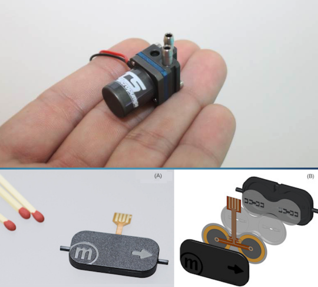
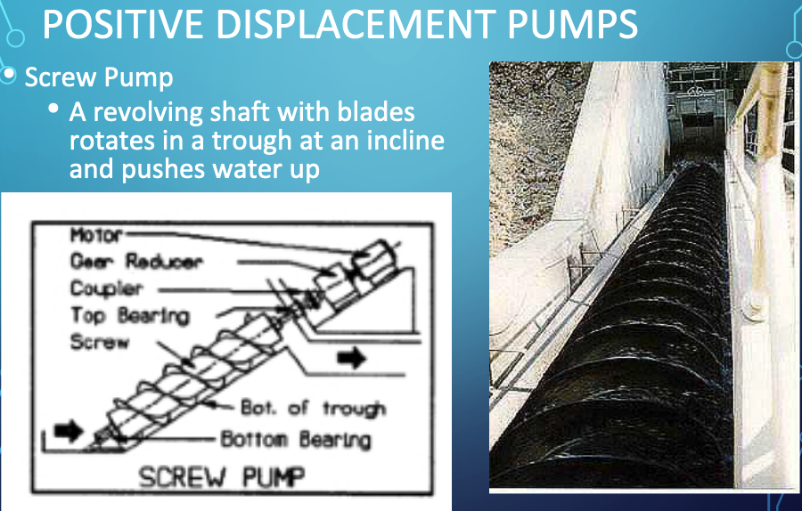
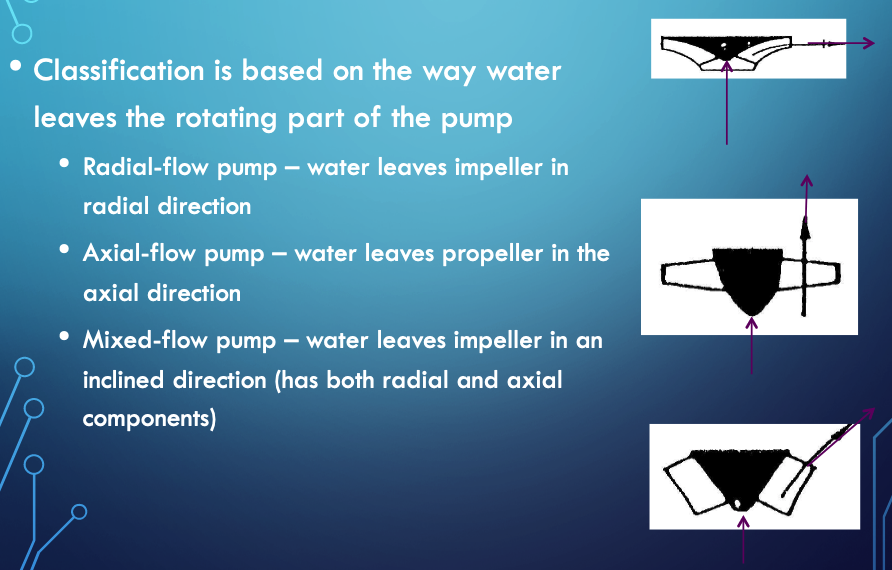
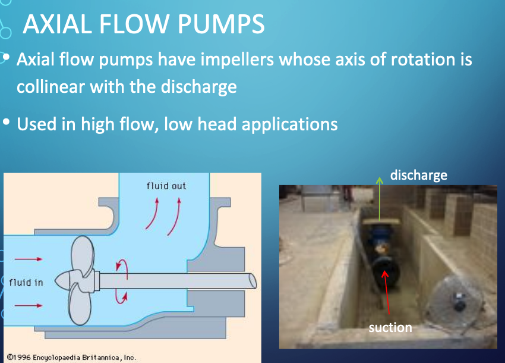
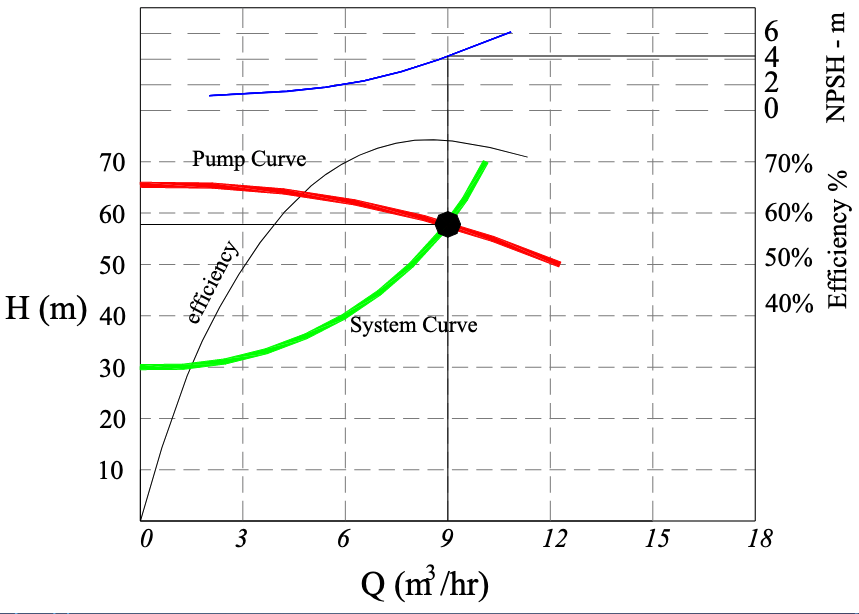
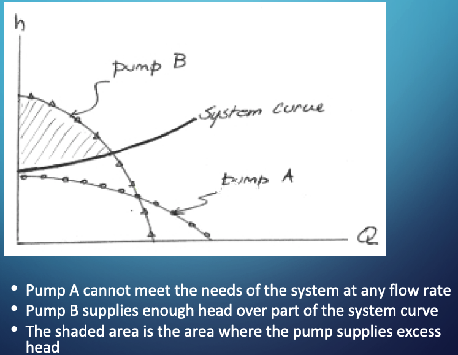
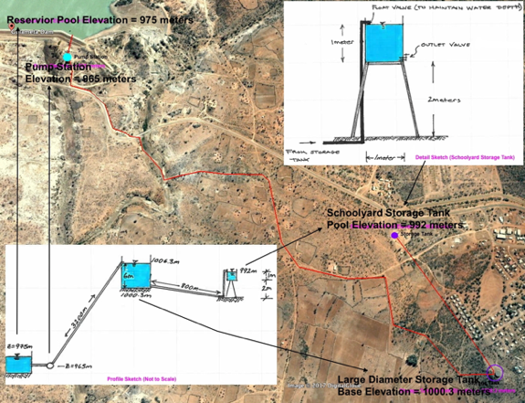
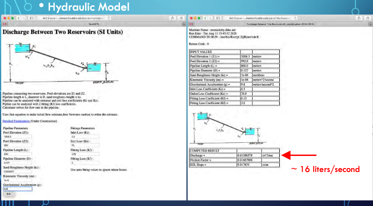
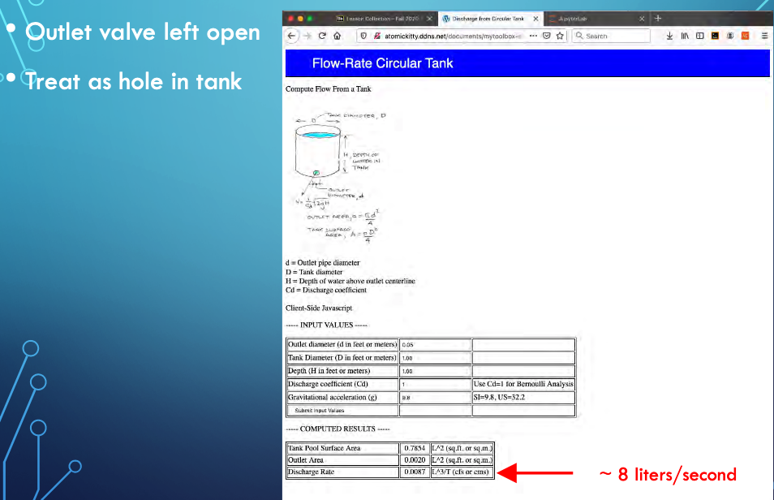
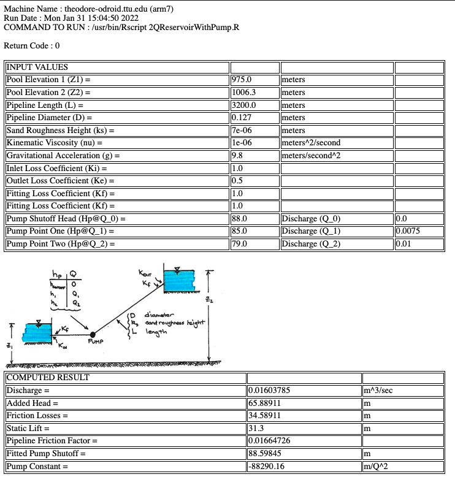

Pumping Systems¶
Water moves from higher to lower energy
Path of least resistance
Head is energy per unit weight of a fluid
Pumps are used to add energy to move water to a higher elevation, or over a barrier, or to increase system pressure.
Background¶
A pump is a mechanical device that transfers energy into a liquid; used to
Lift from lower to higher elevation (Lift stations)
Increase pressure (Booster stations)

The gas phase equivalent is a Compressor
Pumps range substantially in size depending on application
Small
Big
Types¶
Positive (Fixed) Displacement Pumps¶
Fixed volume of fluid is displaced each cycle regardless of system static head/pressure
Lower flow rates and higher head than non-positive pumps
Variable Displacement Pumps¶
Varying volume of fluid is displaced dependent on system static head/pressure (back pressure)
Examples of Fixed Displacement Pumps¶
Screw Pumps
Progressive Cavity Pumps
Reciprocating Pumps
Images of Positive Displacement Pumps¶
Screw Pumps 
Progressive Cavity Pumps

Reciprocating Pumps
Examples of Variable Displacement Pumps¶
Centrifugal (Radial-Flow) Pumps
Propeller Pumps (Axial-Flow)
Jet Pumps (Mixed-Flow)

Images of Variable Displacement Pumps¶
Centrifugal (Radial-Flow) Pumps
Propeller Pumps (Axial-Flow) 
Note
A couple of explainatory videos are listed below.
Pump Selection¶
A primary design activity is selecting or sizing a pump for a specific application. The protocol is:
Design conditions are specified by system hydraulics (i.e. energy equation at desired flow rate)
Pump is selected from manufacturer catalogs that appears to meet nominal conditions
A hydraulic system curve (Head vs Discharge) is prepared
The system curve (or equation) is plotted onto the pump curve (manufacturer supplied)
The matching point where the two curves intersect is the anticipated operating point
A few secondary checks are:
Is there some head range remaining?
Flow range remaining?
Is pump efficiency close to optimal for the particular pump?
Is Net Positive Suction Head Available (NPSHa) large enough for the particular pump at the operating point (and start-up)?
System Curve¶
A system (characteristic) curve is a plot of required head versus flow rate in a hydraulic system.
The curve depicts how much energy is needed to maintain a steady flow under the supplied conditions.
The curve is constructed at the pump location and relates the required added head (at a particular flowrate) needed to be supplied by some pump.
For example if the system schematic is

An equation of required head and discharge is

The equation tells us that the added head has to be at least 30 meters just to keep the reservoirs at the two levels shown, if any flow is to occur the pump must supply more than 30 meters of head at a prescribed flow rate. The zero flow head value is called the shutoff head. The equation plots as the figure below
Pump Curve(s)¶
Pump curves are supplied by the manufacturer and convey performance of a specific pump. Information ususally includes:
Discharge (Q) on the x-axis
Head (\(H_p\)) on the left y-axis
Pump power input on the right y-axis
Pump efficiency (wire-to-water) as a percentage
The speed of the pump (RPM)
The required Net Positive Suction Head (\(NPSH_r\))
An example pump curve is shown below¶

Another example curve for a different pump¶

Comparing Different Pumps¶

Multiple Pumps¶
Various multi-pump combinations can be employed to meet hydraulic needs - a lot of flexibility can be achieved with a few pumps and ingenious plumbing.
Parallel Pumps¶
Parallel pumps add discharge for a given working head.
Series Pumps¶
Series pumps add head for a given discharge.
Suction Requirements¶
The most common cause of pumping system failure is poor suction conditions.
Cavitation occurs when liquid pressure is reduced to the vapor pressure of the liquid, then the liquid flashes to make small gas bubbles, which are unstable and collapse back into liquid - this rapid localized phase change process imparts large destructive energy into the pump impeller and housing and quickly destroys the pump itself in addition to creating loss of priming.
In a pipe system with a pump, cavitation will occur when the absolute pressure at the inlet (eye) falls below the vapor pressure of the water.
Note
The pump destruction described is not usually instant, but does happen pretty fast. For example weeks to failure when the designer expects years between overhauls.
High speed turbopumps can fail in seconds when they are supposed to run for minutes. Cavitation is a big deal in things like rocket ships, nuclear power plants (cooling system), and other high-risk applications; less so in Civil Engineering, usually our failures just cost time and money - a lift station failure during a flood could cause death, so we are not risk-free
Considerations
Liquid must enter the pump eye under some pressure; this pressure is dictated by the hydraulic system and is called the Available Net Positive Suction Head \(NPSH_a\).
A centrifugal pump cannot lift water unless it is primed; the first stage impellers must be below the static HGL in the suction pit at startup.
The manufacturer supplies a value for the minimum pressure the pump needs to operate; this pressure is called the Required Net Positive Suction Head \(NPSH_r\)
Proper pump operation without cavitation demands that $\( NPSH_r < NPSH_a \)$
Can calculate \(NPSH_a\) from

An on-line calculator is located at http://54.243.252.9/toolbox/pipehydraulics/NPSHCalculatorUS/NPSHCalculatorUS.html ; the calculator is specific for US Customary Units, but would easily be adaptabe for SI units. The interface looks like

NPSHa Example¶
Problem Statement¶

Solution (part 1)¶

Solution (part 2)¶
Solution (part 3)¶
Solution (part 4)¶

We look up the liquid properties at http://54.243.252.9/toolbox/fluidmechanics/WaterPropertiesUS/WaterPropertiesUS.html
Solution (part 5)¶
Now insert these intermediate values into the equation for \(NPSH_a\) paying close attention to how the equation is written in the calculator (the \(H_{static}\) sign is changed in the calculator in comparison to the equation presented above, the remaining terms are unchanged.

Solution Summary¶

Summary¶
That’s our quick overview of pumps as relevant for water systems. Key points are:
Need a system curve (we can get it out of EPANET for complicated layouts)
Need some pump curves (internet, vendor websites)
Find operating point
Judge if there is some excess head and/or flow available (this would be desirable)
Judge if close to best possible efficiency for the pump (can vary a little, but it would be dumb to operate a piss-po efficiency)
Check suction conditions at startup and operation
If all good, then have a pump
Remember can run multiple pumps if a single pump is not available (really big pumps can be custom built, but we usually want to use off-the-shelf pumps)
Linking Systems¶
A hydraulic system can be analysed as a set of linked components to make an otherwise complicated system easier to analyze.
Idea is to decompose into smaller (hydraulically) independent parts, analyze the parts then reassemble (integrate) the parts to answer questions about the whole system
Example: Rural Water Supply to a Village School¶

The figure is an aerial image of a pipeline system with preliminary engineering sketches of the system (lower left panel) and a detail sketch of the terminal small storage tank (upper right panel). The 3,200 meter long pipeline lifts 25C water ( \(\rho= 997 kg/m^3\),\(\nu= 8.94 E-7 m^2/s\)) from a treatment plant on the downstream face of Gulameta Dam through a 127 millimeter high-density polyethylene (HDPE) pipe (ks =0.0015 mm) to a large diameter at-grade cylindrical storage tank. A secondary, 800 meter long pipeline carries water from the large diameter storage tank to a small, cylindrical (D = 1 meter), elevated storage tank at the village school. Both storage tanks have float valves to prevent overflow and maintain the indicated water pool elevations.
Analyze proposed system to determine anticipated behavior under various situations:
Float valve fails at school
Outlet valve accidently left open
Pump operation under worst failure mode
Pump fails, time until system fails/drains
Float valve limited
Oultet valve limited
Float Valve at School Fails
Get dimensions

Get material properties, and loss coefficients

Apply On-Line Tool or JupyterLab script

The JupyterLab script is shown below, but needs modification for the minor losses. Hence the two values are sort of close, but without all losses the JupyterLab script as shown overestimates the discharge.
# modified from getQfromH.py
# ipython module for pipeline hydraulics
# computation engine #########################
# import built in functions for log, sqrt
from math import log,sqrt
# Define the prototype function
def jainQ(pipe_diameter,pipe_length,roughness,viscosity,grabity,head_loss):
egl_slope = head_loss/pipe_length
t1 = sqrt(grabity*pipe_diameter*egl_slope)
t2 = roughness/(3.7*pipe_diameter)
t3 = 1.78*viscosity
jainQ = (-0.965*pipe_diameter**2)*t1*log(t2 + t3/(pipe_diameter*t1))
return jainQ
# values from Example
pipe_diameter = 0.127
pipe_length = 800.0
roughness = 0.000007
viscosity = 1.0e-06
grabity = 9.8
head_loss = 14.3
# disable above and insert interface engine here
#
# now perform computation and construct output
discharge = jainQ(pipe_diameter,pipe_length,roughness,viscosity,grabity,head_loss)
# Echo inputs, and outputs
print ("Pipe Diameter : ", pipe_diameter)
print ("Pipe Length : ", pipe_length)
print ("Pipe Roughness Height : ", roughness)
print ("Liquid Viscosity : ", viscosity)
print ("Gravitational acceleration constant : ",grabity)
print ("Head loss : ",head_loss)
print ("Discharge : ",round(discharge*1000,3)," liters/sec")
Pipe Diameter : 0.127
Pipe Length : 800.0
Pipe Roughness Height : 7e-06
Liquid Viscosity : 1e-06
Gravitational acceleration constant : 9.8
Head loss : 14.3
Discharge : 21.185 liters/sec
School Outlet Valve Left Open
Treat as a hole in the tank, assume supply side is unchanged and maintains downstream water level

JupyterLab script for hole in tank (future version this book)
Pump System Requirements
Here we will examine the pump requirements to sustain flow to the intermediate tank (on the hill) at 16 liters per second. Why 16? Its the larger of the two probable failure modes, so we will use that value.
Our analysis in this case is the system to the left side of the tank on the hill. Ultimately we will use the energy equation written here as:
We are really looking for the value of \(h_p(Q)\) for \(Q=16~\frac{l}{s}\) and then would look for a pump that can deliver the flow into our operating conditions.
A quick rearrangement gives us
Now for the \(h_l(Q)\) term:
or after some algebra:
Notice \(f\) is a function of \(Q\) so there will be some iteration involved if we already know the pump parameters.
An easy way to estimate the system is to make guesses at a pump curve and use the on-line tool to predict behavior and stop when we have the correct flowrate.

Here is the code for the web interface
!DOCTYPE html PUBLIC >
<html><head><title>NewANTS </title></head>
<link rel = "stylesheet" type = "text/css" href = "styles.css" >
<body>
<h1> Discharge Between Two Reservoirs </h1>
<img src = "./Q2ReservoirWithPump.gif" width = "600" height = "250" > <br/>
<p>Pipeline connecting two reservoirs. Pool elevations are Z1 and Z2. </br>
Pipeline length is L, diameter is D, sand roughness height is ks. </br>
Pipeline can be analyzed with entrance and exit loss coefficients (Ki and Ke). </br>
Pipline can be analyzed with 2 fitting (Kf) loss coefficients. </br>
A three point pump performance curve is supplied -- shutoff head is one point. </br>
Calculator solves for flow rate in the pipeline. </br></br>
Uses Jain equation to make initial flow estimate,then Newton's method to refine the estimate.</p>
<p><a href="#"> Detailed Explaination </a> (Under Construction) </p>
<form method ="POST"
action = "http://54.243.252.9/cgi-bin/pipehydraulics/2QReservoirWithPump/2QReservoirWithPump.py">
<table style= "width:70%">
<tr><td> <u>Pipeline Parameters</u> </td><td> <u>Fittings Parameters</u> </td></tr>
<tr>
<td>
Pool Elevation (Z1): <br/> <input type = "text" name = "h1"><br/>
</td>
<td>
Inlet Loss (Kin): <br/> <input type = "text" name = "kinlet"><br/>
</td>
</tr>
<tr>
<td>
Pool Elevation (Z2): <br/> <input type = "text" name = "h2"><br/>
</td>
<td>
Exit Loss (Ke) : <br/> <input type = "text" name = "koutlet"><br/>
</td>
</tr>
<tr>
<td>
Pipeline Length (L) : <br/> <input type = "text" name = "length"><br/>
</td>
<td>
Fitting Loss (Kf) : <br/> <input type = "text" name = "kfit1"><br/>
</td>
</tr>
<tr>
<td>
Pipeline Diameter (D) : <br/> <input type = "text" name = "diameter"><br/>
</td>
<td>
Fitting Loss (Kf) : <br/> <input type = "text" name = "kfit2"><br/>
</td>
</tr>
<tr>
<td>
Sand Roughness Height (ks) : <br/> <input type = "text" name = "ksand"><br/>
</td>
<td>
Use zero fitting values to ignore minor losses <br/>
</td>
</tr>
</table>
<hr></hr>
<table style= "width:60%">
<tr><td> <u>Fluid Parameters</u> </td><td> </td></tr>
<tr>
<td>
Kinematic Viscosity (nu) : <br/> <input type = "text" name = "viscosity"><br/>
</td>
<td>
Gravitational Acceleration (g) : <br/> <input type = "text" name = "gravity"><br/>
</td>
</tr>
</table>
<hr></hr>
<u>Pump Performance Parameters</u>
<table style= "width:60%">
<tr><td> <u>Pumping Added Head</u> </td><td> <u>Pumping Flowrate</u></td></tr>
<tr>
<td>
Head at Q=0 (Hshut): <br/> <input type = "text" name = "hshut"><br/>
</td>
<td>
Q@Hp_0 (Q_0): <br/>0.0
</br>
</td>
</tr>
<tr>
<td>
Head at Q=Q1 (Hone): <br/> <input type = "text" name = "hone"><br/>
</td>
<td>
Q@Hp_1 (Q_1): <br/> <input type = "text" name = "qone"><br/>
</td>
</tr>
<tr>
<td>
Head at Q=Q2 (Htwo): <br/> <input type = "text" name = "htwo"><br/>
</td>
<td>
Q@Hp_2 (Q_2): <br/> <input type = "text" name = "qtwo"><br/>
</td>
</tr>
</table>
<input type = "submit">
</form>
</body>
</html>
Here is the code for the computation engine wrapper
#!/usr/bin/python
#
# Uses HMTL POST method
# Computer Name(s): localhost on Theodore's MacBook Pro 15
# : theodores-pro.ttu.edu on Theodore's MacPro
import cgi, cgitb , time # Import modules for CGI handling
import subprocess # Import subprocess module for handling system calls
# Create instance of FieldStorage
form = cgi.FieldStorage()
# Get inputs from fields
h1 = float(form.getvalue('h1'))
kinlet = float(form.getvalue('kinlet'))
hshut = float(form.getvalue('hshut'))
h2 = float(form.getvalue('h2'))
koutlet = float(form.getvalue('koutlet'))
hone= float(form.getvalue('hone'))
length = float(form.getvalue('length'))
kfit1 = float(form.getvalue('kfit1'))
htwo= float(form.getvalue('htwo'))
diameter = float(form.getvalue('diameter'))
kfit2 = float(form.getvalue('kfit2'))
qone= float(form.getvalue('qone'))
ksand = float(form.getvalue('ksand'))
qtwo= float(form.getvalue('qtwo'))
viscosity = float(form.getvalue('viscosity'))
gravity = float(form.getvalue('gravity'))
# some constants
qshut = float(0.0)
# Build the input file
ofile = open("/var/www/atkaws/OK2Write/pipehydraulics/Q2ReservoirWithPump/input.dat","w") # open a file to transfer input stream to R
ofile.write(repr(h1) + "\n")
ofile.write(repr(h2)+ "\n")
ofile.write(repr(length)+ "\n")
ofile.write(repr(diameter)+ "\n")
ofile.write(repr(ksand)+ "\n")
ofile.write(repr(viscosity) + "\n")
ofile.write(repr(gravity)+ "\n")
ofile.write(repr(kinlet)+ "\n")
ofile.write(repr(koutlet)+ "\n")
ofile.write(repr(kfit1)+ "\n")
ofile.write(repr(kfit2)+ "\n")
ofile.write(repr(hshut)+ "\n")
ofile.write(repr(hone)+ "\n")
ofile.write(repr(htwo)+ "\n")
ofile.write(repr(qone)+ "\n")
ofile.write(repr(qtwo)+ "\n")
ofile.close()
# Build the system command
path_to_Rscript = "/usr/bin/Rscript"
commando = path_to_Rscript + " 2QReservoirWithPump.R"
return_code = 1 # Set return code to 1 (Fail)
# Here we run 1D-AD-Sauty, and PIPE stdout to the 1D_AD_OgataBanks object
_2QReservoir = subprocess.Popen(commando, stdout=subprocess.PIPE, shell = True) # run process
output, err = _2QReservoir.communicate() # capture output from stdout (command line)
return_code = _2QReservoir.returncode # capture the return code
# Here we capture the output and process
# need to read the output file
ofile = open("/var/www/atkaws/OK2Write/pipehydraulics/Q2ReservoirWithPump/output.dat","r") # open a file to recover output stream from R
# process the output stream from R script
xyz = [] # null list to capture each triple
how_many_lines = 0
for line in ofile:
xyz.append([float(n) for n in line.split(",")])
how_many_lines += 1
ofile.close()
#ncols = len(xyz[0]) # get number of columns, should be 3
# assign names
flow = xyz[0][0]
addedHead = xyz[1][0]
frictionLoss = xyz[2][0]
staticLift = xyz[3][0]
frictionFactor = xyz[4][0]
pumpShut = xyz[5][0]
pumpCoef = xyz[6][0]
# Here we get the graphic
plotfile = ' <img src = "/toolbox/pipehydraulics/Q2ReservoirWithPump/Q2ReservoirWithPump.gif" width = "400" height = "200" > '
# Prepare the output HTML
now = time.strftime("%c")
print "Content-type:text/html\r\n\r\n" # should have two returns and line feeds
print "<html>"
print "<style> table, th, td {border: 1px solid black;} </style>"
print "<head>"
print "<title> Discharge Between Two Reservoirs </title>"
print "</head>"
print "<body>"
print "Machine Name : theodore-odroid.ttu.edu (arm7) <br/>"
print "Run Date : " , now ," <br/> "
print "COMMAND TO RUN : ", commando, "<br/> <br/>"
print "Return Code : ",return_code, " <br/> <br/>"
#######################################
print "<table style="""" "width:50%" """ ">"
print "<tr>"
print "<td>INPUT VALUES </td> <td> </td><td></td> <td> </td>"
# alignment for ease of program maintenance, extra spaces are ignored in program run
print "</tr>"
print "<tr> <td> Pool Elevation 1 (Z1) = </td> <td> ", h1, " </td> <td> meters </td> <td></td></tr> "
print "<tr> <td> Pool Elevation 2 (Z2) = </td> <td> ", h2 , " </td> <td> meters </td> <td></td></tr> "
print "<tr> <td> Pipeline Length (L) = </td> <td> ", length, " </td> <td> meters </td><td></td> </tr> "
print "<tr> <td> Pipeline Diameter (D) = </td> <td> ", diameter, " </td> <td> meters</td> <td></td></tr> "
print "<tr> <td> Sand Roughness Height (ks) = </td> <td> ", ksand, " </td> <td> meters </td><td></td> </tr> "
print "<tr> <td> Kinematic Viscosity (nu) = </td> <td> ", viscosity, " </td> <td> meters^2/second </td> <td></td></tr> "
print "<tr> <td> Gravitational Acceleration (g) = </td> <td> ", gravity, " </td> <td> meters/second^2 </td><td></td> </tr> "
print "<tr> <td> Inlet Loss Coefficient (Ki) = </td> <td> ", kinlet, " </td> <td> </td> <td></td></tr> "
print "<tr> <td> Outlet Loss Coefficient (Ke) = </td> <td> ", koutlet, " </td> <td> </td> <td></td></tr> "
print "<tr> <td> Fitting Loss Coefficient (Kf) = </td> <td> ", kfit1, " </td> <td> </td> <td></td></tr> "
print "<tr> <td> Fitting Loss Coefficient (Kf) = </td> <td> ", kfit2, " </td> <td> </td> <td></td></tr> "
print "<tr> <td> Pump Shutoff Head (Hp@Q_0) = </td> <td> ", hshut, " </td> <td> Discharge (Q_0) </td> <td>",qshut,"</td></tr> "
print "<tr> <td> Pump Point One (Hp@Q_1) = </td> <td> ", hone, " </td> <td> Discharge (Q_1) </td> <td>",qone,"</td></tr> "
print "<tr> <td> Pump Point Two (Hp@Q_2) = </td> <td> ", htwo, " </td> <td> Discharge (Q_2) </td> <td>",qtwo,"</td></tr> "
print "</table><br/>"
########################################
print plotfile
########################################
print "<table style="""" "width:50%" """ ">"
print "<tr> <td>COMPUTED RESULT</td> <td> </td> <td> </td> "
print "<tr> <td> Discharge = </td> <td> ", flow , "</td> <td> m^3/sec </td> </tr> "
print "<tr> <td> Added Head = </td> <td> ", addedHead , "</td> <td> m </td> </tr> "
print "<tr> <td> Friction Losses = </td> <td> ", frictionLoss , "</td> <td> m </td> </tr> "
print "<tr> <td> Static Lift = </td> <td> ", staticLift , "</td> <td> m </td> </tr> "
print "<tr> <td> Pipeline Friction Factor = </td> <td> ", frictionFactor , "</td> <td> </td> </tr> "
print "<tr> <td> Fitted Pump Shutoff = </td> <td> ", pumpShut , "</td> <td> m </td> </tr> "
print "<tr> <td> Pump Constant = </td> <td> ", pumpCoef , "</td> <td> m/Q^2 </td> </tr> "
print "</table><br/>"
########################################
print "</body>"
print "</html>"
# end of script
Here is the actual computation engine (in R)
# Flow between two reserviors (for CE 3372)
#############################################################
############## Forward Define Support Functions #############
#############################################################
# Jain Friction Factor Function -- Tested OK 23 SEP16
friction_factor <- function( roughness , diameter , reynolds ){
temp1 <- roughness /(3.7* diameter );
temp2 <- 5.74/( reynolds^(0.9) );
temp3 <- log10 ( temp1 + temp2 );
temp3 <- temp3 ^2;
friction_factor <- 0.25/ temp3 ;
return ( friction_factor )
}
# Velocity Function
velocity <- function( diameter , discharge ){
velocity <- discharge /(0.25* pi* diameter^2)
return ( velocity )
}
# Reynolds Number Function
reynolds_number <- function( velocity , diameter ,mu){
reynolds_number <- abs ( velocity )* diameter /mu
return ( reynolds_number )
}
# Jain Equation (Initial Guess Pipeline Only)
jain <- function(h1,h2,lenght,diameter,gravity,viscosity,ksand){
term1 <- sqrt( gravity*((h1-h2)/length))
term2 <- ksand/(3.7*diameter)
term3 <- 1.78*viscosity/(term1*diameter^(3/2))
term4 <- log10(term2+term3)
jain <- -2.22*(diameter^(5/2))*term1*term4
return(jain)
}
############ Function to Get 3-Point Pump Curve #############
get_pump_parm <- function(hshut,hone,htwo,qshut,qone,qtwo){
# fit a quadratic model to the 3-point pump curve
amat <- matrix(0,nrow=3,ncol=2,byrow=TRUE)
bvec <- numeric(0)
pumpcrv <- numeric(0)
# build the amat matrix
for (irow in 1:3){
amat[irow,1] <- 1
}
amat[1,2] <- qshut^2
amat[2,2] <- qone^2
amat[3,2] <- qtwo^2
# build the bvec
bvec[1] <- hshut
bvec[2] <- hone
bvec[3] <- htwo
# solve the linear system
pumpcrv <- solve(t(amat)%*%amat,t(amat)%*%bvec)
return(pumpcrv)
}
###############################################################
# here is the actual pump curve function
hpump <- function(hshutoff,pumpconst,flowrate){
hpump <- hshutoff + pumpconst*abs(flowrate)*flowrate
return(hpump)
}
###############################################################
# Pipeline Function for Newton's Method
func <- function(h1,h2,fricfact,kinlet,koutlet,kfit1,kfit2,length,diameter,flow,gravity,hshutoff,pumpconst){
# collect terms
coeff1 <- (fricfact*length/diameter)+kinlet+koutlet+kfit1+kfit2
geom1 <- 8/(gravity*diameter^4*pi^2)
func <- h1 + hpump(hshutoff,pumpconst,flow) - h2 - coeff1*geom1*abs(flow)*flow
return(func)
}
# Finite-Difference Derivative Function
dfdx <- function(h1,h2,fricfact,kinlet,koutlet,kfit1,kfit2,length,diameter,flow,gravity,hshutoff,pumpconst)
{
# dfdx <- exp (x) + 10* sin(x);
dfdx <- ( func (h1,h2,fricfact,kinlet,koutlet,kfit1,kfit2,length,diameter,flow+1.0e-06,gravity,hshutoff,pumpconst) - func (h1,h2,fricfact,kinlet>
return ( dfdx );
}
####### Enable for CGI-BIN ##########
zz <- file("/var/www/atkaws/OK2Write/pipehydraulics/Q2ReservoirWithPump/input.dat","r")
#zz <- file("input.txt","r")
# Open a connection to zz
h1 <- as.numeric(readLines(zz, n=1, ok=TRUE, warn=TRUE,encoding="unknown",skipNul = FALSE))
h2 <- as.numeric(readLines(zz, n=1, ok=TRUE, warn=TRUE,encoding="unknown",skipNul = FALSE))
length <- as.numeric(readLines(zz, n=1, ok=TRUE, warn=TRUE,encoding="unknown",skipNul = FALSE))
diameter <- as.numeric(readLines(zz, n=1, ok=TRUE, warn=TRUE,encoding="unknown",skipNul = FALSE))
ksand <- as.numeric(readLines(zz, n=1, ok=TRUE, warn=TRUE,encoding="unknown",skipNul = FALSE))
viscosity <- as.numeric(readLines(zz, n=1, ok=TRUE, warn=TRUE,encoding="unknown",skipNul = FALSE))
gravity <- as.numeric(readLines(zz, n=1, ok=TRUE, warn=TRUE,encoding="unknown",skipNul = FALSE))
kinlet <- as.numeric(readLines(zz, n=1, ok=TRUE, warn=TRUE,encoding="unknown",skipNul = FALSE))
koutlet <- as.numeric(readLines(zz, n=1, ok=TRUE, warn=TRUE,encoding="unknown",skipNul = FALSE))
kfit1 <- as.numeric(readLines(zz, n=1, ok=TRUE, warn=TRUE,encoding="unknown",skipNul = FALSE))
kfit2 <- as.numeric(readLines(zz, n=1, ok=TRUE, warn=TRUE,encoding="unknown",skipNul = FALSE))
#
hshut <- as.numeric(readLines(zz, n=1, ok=TRUE, warn=TRUE,encoding="unknown",skipNul = FALSE))
hone <- as.numeric(readLines(zz, n=1, ok=TRUE, warn=TRUE,encoding="unknown",skipNul = FALSE))
htwo <- as.numeric(readLines(zz, n=1, ok=TRUE, warn=TRUE,encoding="unknown",skipNul = FALSE))
qone <- as.numeric(readLines(zz, n=1, ok=TRUE, warn=TRUE,encoding="unknown",skipNul = FALSE))
qtwo <- as.numeric(readLines(zz, n=1, ok=TRUE, warn=TRUE,encoding="unknown",skipNul = FALSE))
close(zz)
######################################
#### testing -- disable for CGI BIN ###
# h1 <- 1006.3
# h2 <- 992.0
# diameter <- 0.127
# ksand <- 0.0000015
# viscosity <- 8.94e-7
# kinlet <- 1
# koutlet <- 1
# kfit1 <- 1
# kfit2 <- 1
# length <- 800
# gravity <- 9.8
#######################################
# make initial guess
hsmall <- min(h1,h2)
hbig <- max(h1,h2)
flow <- jain(hbig,hsmall,length,diameter,gravity,viscosity,ksand)
#flow <- 0.27
# get the pump curve
qshut <- 0.0
myPump <- get_pump_parm(hshut,hone,htwo,qshut,qone,qtwo)
# set pump constants
hshutoff <- myPump[1]
pumpconst <- myPump[2]
#message("flow = ",flow)
HowMany <- 100
HowSmall <- 1e-9
for (i in 1:HowMany){
# compute current friction factor
flow_velocity <- velocity(diameter , flow)
reynolds <- reynolds_number(flow_velocity , diameter , viscosity)
fricfact <- friction_factor(ksand, diameter, reynolds)
# compute head loss equation
f1<-func(h1,h2,fricfact,kinlet,koutlet,kfit1,kfit2,length,diameter,flow,gravity,hshutoff,pumpconst)
# compute derivative wrt flow
f2<-dfdx(h1,h2,fricfact,kinlet,koutlet,kfit1,kfit2,length,diameter,flow,gravity,hshutoff,pumpconst)
# compute the update
qnew <- flow - f1/f2
# message("func = ",f1)
# message("dfdx = ",f2)
# message("new flow = ",qnew)
# test for stopping
if ( abs (qnew - flow ) < HowSmall ){
message (' Update not changing ')
flow <- qnew
print ( cbind (flow ,qnew , f1))
break
}
if ( abs (f1) < HowSmall ) {
message (' Function value close to zero ', f1)
flow <- qnew
print ( cbind (flow ,qnew , f1))
break
}
# next iteration
flow <- qnew
}
print ( cbind (flow ,qnew , f1))
outfile <- file("/var/www/atkaws/OK2Write/pipehydraulics/Q2ReservoirWithPump/output.dat","w")
#outfile <- file("output.txt","w")
write(flow,outfile) # flowrate
write(hpump(hshutoff,pumpconst,flow),outfile) #added head
write((h1+hpump(hshutoff,pumpconst,flow)-h2),outfile) # friction losses
write((h2-h1),outfile) # static lift
write(fricfact,outfile) # friction factor in pipeline
write(myPump[1],outfile) # fitted pump shutoff
write(myPump[2],outfile) # fitted pump constant
close(outfile)
Pump System Fails, Time to Drain
This portion of example moved to after pumps
References¶
Gupta, R. S. 2017. Hydrology and Hydraulic Systems. Waveland Press, Inc. pp xx-xx
Pump Selection ; Walker, R. (1973) Pump Selection. Ann Arbor Science pp. 3-9 http://54.243.252.9/ce-3372-webroot/3-Readings/PumpSelection/
Pump Suction Conditions; Walker, R. (1973) Pump Selection. An Arbor Science pp. 11-31 http://54.243.252.9/ce-3372-webroot/3-Readings/PumpSuctionConditions/
Hauser, B. A. (1991). Practical Hydraulics Handbook. Lewis Publishers, Michigan. pp. 296-299 http://54.243.252.9/ce-3372-webroot/3-Readings/NPSHExplain/
City of Houston; List Station Design Guidelines http://54.243.252.9/ce-3372-webroot/3-Readings/LiftStationCityofHouston/
Highway Stormwater Pump Station Design. FHWA-NHI-01-007. http://54.243.252.9/ce-3372-webroot/3-Readings/LiftStationDesign/